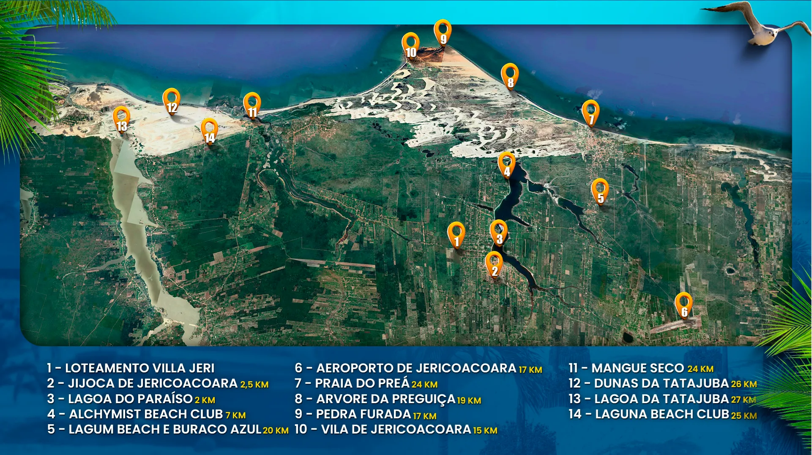

Villa Jeri Loteamento
Participe do novo lançamento em
Jericoacoara, construa seu paraíso em Jeri.
Lotes a partir de 250m , em até 144 meses para pagar
Natureza e exclusividade na medida certa
O Villa Jeri é um loteamento planejado em Jijoca de Jericoacora(CE) estrategicamente localizado a poucos minutos dos principais atrativos da região, como a famosa lagoa do Paraíso, o centro de Jijoca à vila de Jericoacoara, um dos destinos mais desejados do Brasil.
Jericoacoara é um dos destinos mais encantadores do Brasil, localizada no litoral do Ceará. a cerca de 300km de Fortaleza. Conhecida carinhosamente com "Jeri, a vila combina paisagens paradisíacas, atmosfera rústica e experiências exclusivas.

Villa Jeri Loteamento: Único em toda região
A qualidade de vida que você merece
Não estou falando de alugar uma casa pro fim de semana, depender de disponibilidade ou pagar diárias altíssimas na alta estação.
Estou falando de construir o seu refúgio definitivo no destino mais desejado do Brasil.
Quando você se torna dono de um lote aqui, a sua perspectiva muda. Você não se pergunta mais "onde vamos passar as férias?".
Você simplesmente avisa: "neste feriado, vamos pra nossa casa em Jeri".
E o grande privilégio do Villa Jeri é o ponto no mapa.
Uma localização desenhada a dedo para quem quer o sossego da natureza, mas exige a conveniência da cidade grande:
A 2 km da Lagoa do Paraíso: A distância exata entre o seu café da manhã e um mergulho nas águas cristalinas mais famosas do Ceará.
A 2,5 km do centro de Jijoca: Precisou de farmácia, mercado ou serviços? A estrutura da cidade inteira está a cinco minutos do seu portão.
A 15 km da Vila de Jeri: Perto o suficiente para curtir os melhores restaurantes e a noite agitada, distante o suficiente para ter silêncio absoluto na hora de dormir.
A 17 km do Aeroporto: Desembarcou, chegou. Sem horas de estrada cansativa.
E a infraestrutura acompanha o seu nível de exigência.
No Villa Jeri, você tem lotes espaçosos, a partir de 250m² — a metragem perfeita para projetar aquela casa linear com varanda gourmet, piscina e redário.
Tudo isso entregue com padrão premium: ruas pavimentadas em bloco intertravado com meio-fio (muito mais conforto térmico e zero poeira), iluminação 100% em LED, além de redes de água e energia prontas para você começar a obra.
Terreno no litoral cearense, com essa estrutura de alto padrão e rodeado pelos melhores Beach Clubs (Alchymist, Laguna, Lagum), não é só a realização de um sonho.
É um ativo blindado na sua carteira.
A pergunta não é se você quer ter um pé em Jeri.
A pergunta é: você vai deixar as unidades mais exclusivas e bem posicionadas ficarem com outra pessoa?
Me chama agora e vamos escolher o cenário da sua nova casa.
Toda garantia que precisa para estar adiquirindo seu lote com maior segurança e tranquilidade pela internet.
Só trabalhamos com lotes juridicamente perfeitos que dão garantias tanto aos clientes em estar fazendo bons negócio quanto à reputação da nossa empresa
Seu lote terá toda documentação necessária e nosso acompanhamento
"Minha experiência com esse produto foi fantástica! Sua praticidade e qualidade superaram minhas expectativas. A equipe de atendimento foi extremamente prestativa e amigável. Recomendo sem hesitar!"
"Estou encantado com a minha experiência ao utilizar este produto. Sua qualidade e desempenho superaram minhas expectativas. Além disso, a equipe de suporte foi extremamente atenciosa e prestativa."
"Estou maravilhado com esse produto! Sua performance e confiabilidade me impressionaram. Recomendo sem hesitar!"
Loteamento Villa Jeri
📌 Localizado em Jijoca de Jericoacoara;
📌 Lotes a partir de 10 de frente x 25 de fundo (250 m²);
📌 Parcelas a partir de R$ 312,50
📌 Infraestrutura:
💦 água
⚡ Energia
🛣 Pavimentação em piso intertravado e meio fio.
📌 Correção anual IPCA + 3%
________________________________
Loteamento Villa Jeri(distância / tempo)
Centro de Jijoca x Loteamento
🚗 2,5km
⏱ 5minutos
Lagoa do Paraíso x Loteamento
🚗 2 km
⏱ 5 minutos
Loteamento x Jericoacoara
🚗 15 km
⏱ 25 minutos
Fortaleza x Loteamento
🚗 284 km
⏱ 4hrs
Não somos condomínio, somos Associação de Moradores, pois condomínio a taxa é muito alta e inviabiliza nossa vocação de investimento.
Pela Associação vamos apenas executar o rateio de custos da portaria e area de lazer.
Todos os lotes já se encontram desmembrados dentro da matrícula-mãe com projeto totalmente aprovado pelos orgãos ambientes e municipais.
Solicite a um de nossos consultores e enviaremos a versão em PDF dos documentos via WhatsApp.
Temos o nosso financimento direto com a construtora, sem nenhuma burocracia em até 144 vezes.
Estamos aqui para ajudar! Entre em contato com nossos atendentes no WhatsApp e receba um atendimento personalizado e ágil.
Ir para whatsappPrivacidade protegida
Compra segura
Satisfação garantida